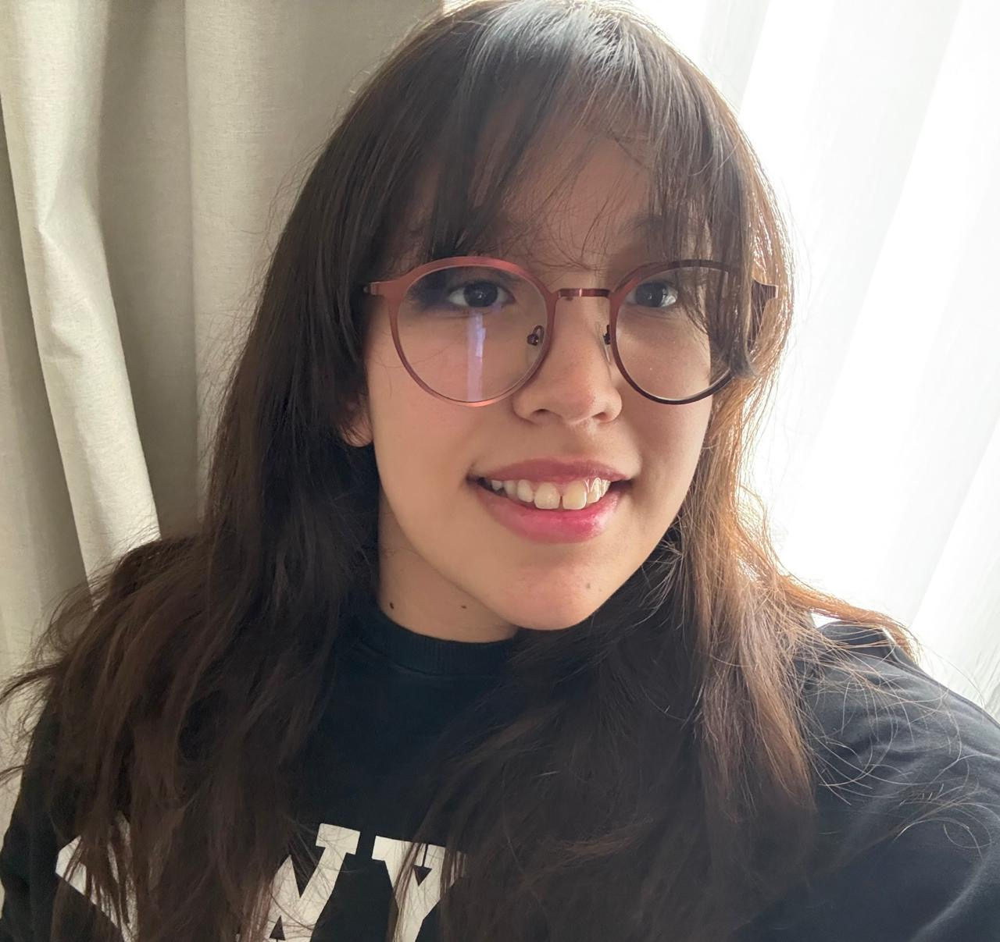
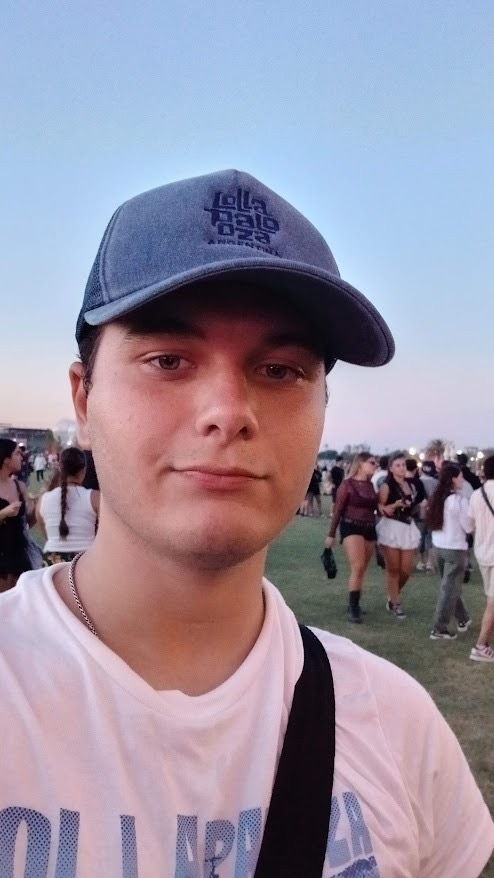
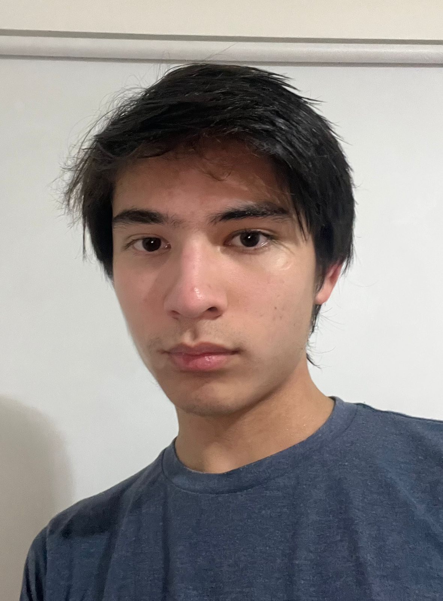
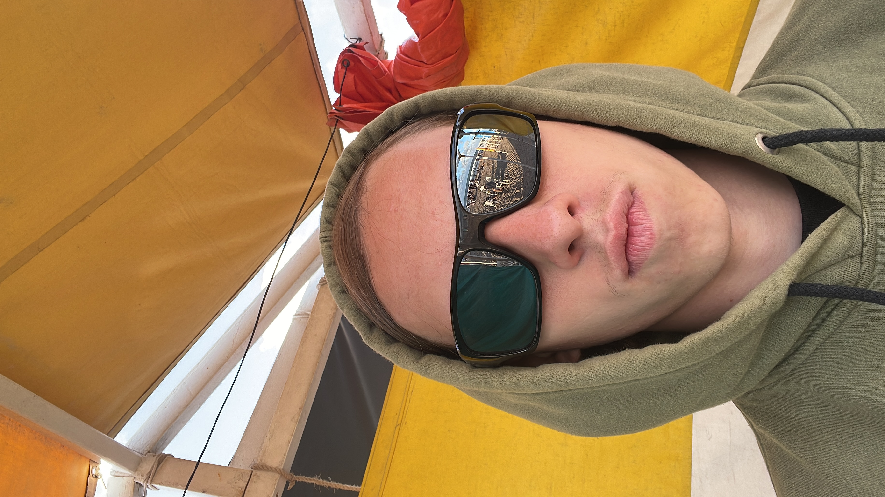

About Us
We are a team of 4 final year students from Colegio del Arce, united by a challenge that marks the closing of our school stage.
OUR STORY
Welcome to the Water League!
Four key sectors work in harmony to drive progress and creative problem-solving: the Ocean, Land, and Energy Leagues, alongside our specialized team in the Water League.
As representatives of the water element, our philosophy is based on health and nature. Like water that flows and transforms everything in its path, our team focuses on creating web solutions that are intuitive and impactful.
OUR OBJECTIVE
We are closing our cycle at Colegio del Arce demonstrating the technical and creative skills we have learned. Our goal is to show the depth and clarity necessary to stand out.
THE TEAM
Who are we?

Emma Muñoz
Designer & Programmer

Bautista Naser
Programmer & Researcher

Tomas Rossi
Programmer & Researcher

Tomas Coluccio
Programmer & Researcher